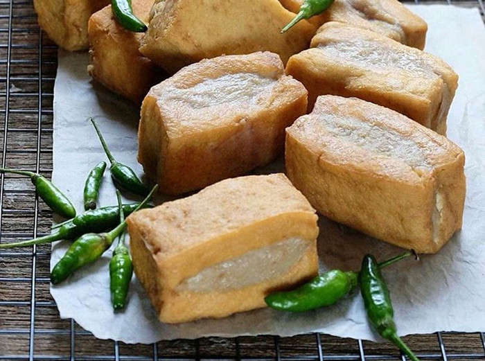
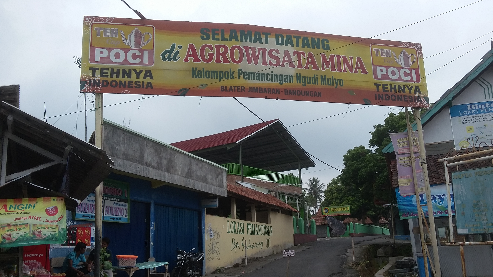
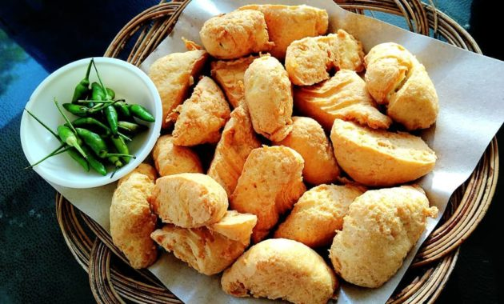
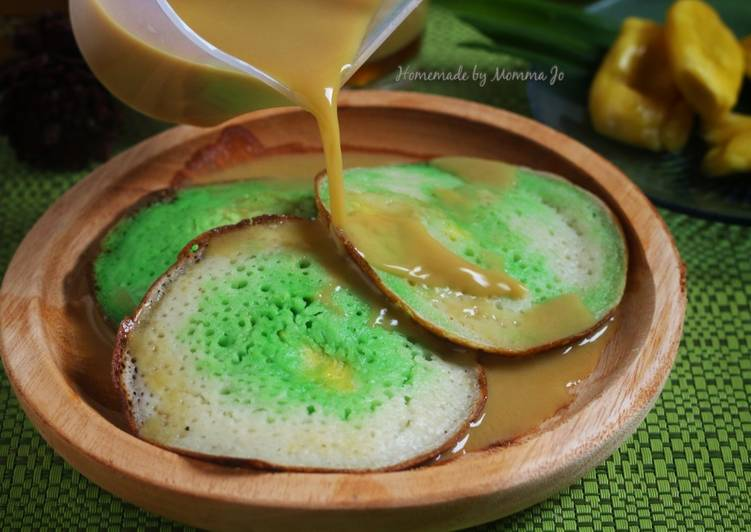
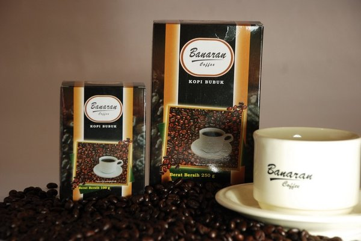

Wanna some relaxing music ? ?
Piano here
Guitar here
Where U go?


Another Related Topic :
Follow us


Introduction...
Tiap-tiap daerah pastilah mempunyai cirinya tersendiri. Ciri tersebut biasanya dari keunikan yang dimiliki oleh tiap daerah itu bisa saja dari segi geografisnya yang membuatnya memiliki berbagai keindahan alam ataupun dari segi kuliner yang unik dan tentunya enak sehingga menjadikan orang yang berkunjung terkesn hingga ingin rasanya mencoba lagi. eits jagan salah si doi aja suka dengan keunikan yang kamu miliki masa daerah yang indah seindah tatapan mata doi gaada keunikannya hehe.. but kaum mending mending diem dulu yak no comment no debat hehe.
Dalam hal ini kita akan menyoroti dari segi kuliner saja kawan. Toh wisata kuliner salah satu hal yang menyenangkan juga hehe. Di daerah kabupaten semarang sendiri terdapat banyak tempat wisata kuliner yang juga dijadikan sebagai pusat oleh oleh dan hal ini tidah terdapat pada suatu komplek daerah saja kawan namun diberbagai daerah. Contohnya seperti di Ungaran, Bandungan, Ambarawa dan sekitarnya. Kita akan mengangkat topic di daerah ini saja mengingat kabupaten semarang yang cukup luas dan daerah yang melewati salatiga saya pikir lumayan jauh jadi nanti akan dibuatin segment sendiri.
Kembali ke topik, wilayah ungaran sendiri memiliki jajanan yang ikonik yaitu tahu bakso bergeser ke lereng gunung ungaran terdapat pemancingan di desa jimbaran lalu naik kembali ke bandungan yang terdapat tahu serasi turun kearah ambarawa tepatnya di desa ngampin yang terdapat serabi ngampin dan terahir menuju arah magelang terdapat kopi banaran. Oke deh itu tadi rute yang akan kita lewati, langsung saja kita menuju ke pembahasan nya lets cekidot.

Ungaran sendiri terkenal dengan oleh oleh tahu baksonya. Saat ini sudah banyak pengrajin tahu bakso di daerah ungaran mulai dari UMKM rumahan hingga yang sudah mempunyai nama besar seperti tahu bakso bu pudji. Bukan hanya itu bahkan pengrajin bakso seperti bakso mas hadi pun juga turut menambah dagangannya dengan memproduksi tahu bakso. Nah untuk tahu bakso sendiri biasanya lebih dijadikan sebagai oleh oleh kawan namun juga bisa dinikmati langsung ditempat dengan berbagai macam paduan lain seperti kecap dan acar.Lokasi sentra tahu bakso di ungaran ini tidak hanya di satu kompleks saja kawan namun berpencar cukup jauh apalagi yang UMKM rumahan jadi susah untuk mengelompokkannya. harganya pun cukup terjangkau kisaran 3000 rupiah per bijinya nah kawan kawan bisa search langsung dengan keyword tahu bakso ungaran atau yang biasanya familiar untuk dikunjungi yaitu tahu bakso bu pudji lokasinya bisa diakses disini.

Lanjut menuju ke daerah jimbaran daerah ini memiliki wisata kuliner yaitu agrowisata pemancingan,loh pemancingan kok tempat wisata sih?! Sabar kawan hehe. Di daerah ini biasanya disebut blater oleh warga sekitar,tempat ini sebenrnya bisa dibilang restoran/warung makan yang mengolah berbagai macam ikan seperti ikan emas,nila,gurame, lele, mujaer dan lain sebagainya. Disini bukan haya terdapat satu warung makan saja kawan namun terdapat banyak karena disitu merupakan komplek pemancingan. Olahan ikan pun terdapat berbagai macam dan tentunya enak serta terjangkau.salah satu rumahmakan yang recomended dikomplek ini yaitu pemancingan suharno jangan kaget bila menemukan banyak pemancingan suharno karena itu merupakan cabangnya hehe.Lokasi kompleks agrowisata pemancingan jimbaran dapat dilihat disini.

Naik ke Bandungan, di bandungan sendiri terdapat komplek yang memasarkan oleh oleh yaitu tahu serasi, loh tahu lagi tahu lagi hehe. Tahu ini beda dengan tahu bakso kawan hanya tahu goreng kuning saja lo ya namun rasanya enak kali kawan apalagi dengan suasana dingin serta pemandangan di lereng gunung ungaran menjadikannya cemilan yang sangat cocok dinikmati. Teksturnya yang halus dan padat serta rasa gurih sangat cocok dipadukan dengan kecap dan cabai apalagi dicombo dengan minuman panas seperti susu sari kedelai mantep bener hehe. Untuk penjualan Tahu serasi ini kawan kawan bisa langsung mengunjungi ke produsennya seperti tahu serasi oom shin dan tahu serasi ibu khotijah atau ke komplek warung yang berjualan dipinggir jalan kawan tepatnya di daerah jalan sukorini depan hotel nuwis. Nah untuk lebih mudahnya kalian bisa mengakses lokasinya disini.

Selanjutnya kita menuju ke Ambarawa tepatnya di daerah jalan raya ngampin. Disini terdapat kompleks kuliner serabi ngampin atau lebih disebut dengan serabi kucur. Makanan ini merupakan jenis makanan kuah hangat yang cocok dinikmti dikala santai. Serabi ini dibuat dari adonan tepung beras dan santan serta kuahnya sendiri dari santan dan gula merah. Serabi ini enak dimakan begitu saja tanpa kuah dengan rasa manis serta tekstur legit dan empuk menjadikan makanan ini ingin rasanya terus dinikmati. Didaerah komplek ini terdapat banyak sekali pedagang yang berjualan di samping jalan terdapat lebih dari 50 penjual bahkan kurang lebih ada 100 pedagang di sepanjang jalan raya ngampin ini. Tidk perlu khawatir untuk menyebrang jalan karena terdapat penjual disisi kiri dan kanan jalan. harganya yang cukup murah kisaran 7000 rupiah untuk seporsinya so kawan kawan bila ingin nambah tidakperlu hawatir untuk keluar uang banyak kawan hehe.Untuk lokasinya kawan kawan bisa mengaksesnya di sini.

Topik terakhir yaitu kopi banaran atau lebih familiar disebut banaran coffee. Siapa sih yang tidak suka degan kopi apalagi suasana dingin malam yang cocok dipadukan dengan menyeruput secangkir kopi. Kopi banaran merupakan jenis kopi robusta yang dikelola oleh PT PN IX yang komoditas ekspor nya mayoritas ke italia dan amerika loh. Untuk menikmatinya kawan kawan bisa langsung menuju ke wisata kampong kopi banaran yang berada di jalan raya Bawen-Solo tepatnya setelah exit tol ambarawa atau menuju ke pabrik pengolahan serta café yang terdapat di daerah jambu. Nah untuk yang satu ini sedikit berbeda kawan karena kampoeng kopi banaran bukan hanya wisata kuliner kopi saja namun banyak yang lain seperti resto, kolam renang, wisata alam dan sebagainya tapi tetap yang spesial adalah kopinya yang biasanya dinikmati langsing atau sebagai oleh oleh.Lokasi kamopeng kopi banaran bisa diakses disini.
Kesimpulan~
JNah tak terasa kan ahirnya selesai juga. wisata kuliner ikonik diatas hanya sebagian kecil saja lo kawan. masih bayak lagi yang belum tercantum karena itu dipilih hanya yang deket dengan tempattinggalku saja hehe. banyak macamnya enak rasanya dan tentunya harganya pun terjangkau kawan apalagi disuguhi pemandangan yang bagus serta suasana yang yaman pasti akan tambah mantul mantap betul eaa...
So buat temen temen yang udah suntuk banget dirumah ga ngapa ngapain mulu tips ini bisa dicoba nih but kita harus selalu mentaati prokes dan tidak saling egois kawan. egois gimana min? nah misal ada tempat wisata yang ingin dikunjungi namun sangat ramai dan kurangnya efektifnya prokes karena ramai hendaknya kira tunggu hingga sepi atau bisa mencari yang lainnya kawan toh lebih aman hehe teman teman bisa tuh mencari referensi dari berbagai media web kah sosial media kah ataupun rekomendasi dari foodvloger lainnya. oke deh sekian dariku terimakasih telah menyimak stay safe,stay health, and stay happy.see U...